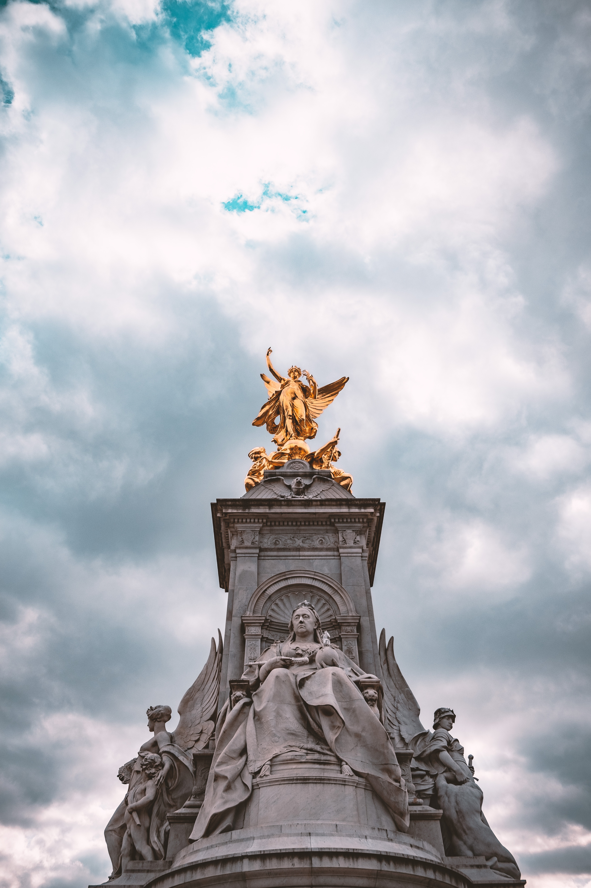

England
 London
London
Big Ben was added to the Palace of Westminster in 1844 after a fire in 1834. Elizabeth Tower is the official name of the tower while Big Ben is the name of the bell within the clock tower. The bells weights over 13 tons! When Parliament is in session there is light that is turned on to notify the people. The tower stands at over 96 metres into the air.

Cost:
- Free to see Elizabeth Tower!
- Oversea visiters cannot tour the clock tour ☹
The British Museum contains over 2 million years of history within its walls. Its collection contains the Rosetta stone and egyptian mummies. Galleries range from Greek Vases to Chinese Jade and Mexico to Mesopotamia. The museum has special opportunities to handle pieces within their collections daily!

Cost:
- Free!
The London Eye opened in 2000 at 135 metres tall. The Eye has won 40 awards for its achievements in architecture and tourism. The London Eye is the tallest ferris wheel in the world. The Eye can accommodate 15,000 visitors a day. The Coca-Cola London Eye was the most visited destination in Europe with over 17m visitors in 2002 & 2003 the next closest was the Eiffel Tower in Paris, France.

Cost:
- Paid
- Adult - € 27.00 to € 44.00
- Child - € 22.00 to € 34.00
Felix Bacher
Buckingham Palace is located in the borough of Westminster. The Palace was built in 1705. Starting in 1883 electricity was added into the Palace which now has over 40,000 light bulbs. Edward VII was the only royal to be born and to die in Buckingham Palace. The Palace is the current home of Queen Elizabeth II and her family in the 830,000 sq. ft. building. The Palace has 775 rooms including 72 royal and guest bedrooms and 78 bathrooms!
Cost:
- Free to view from outside grounds!